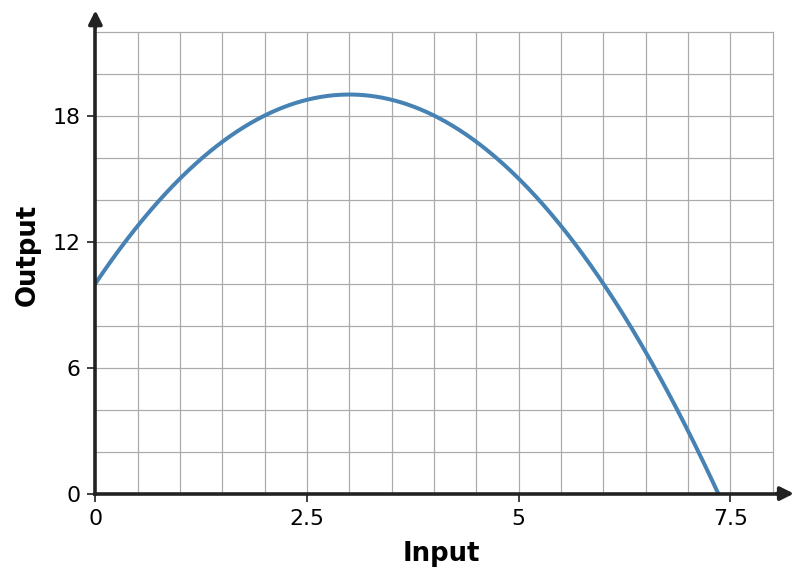

1. A quadratic has zeros $0$ and $8$ and passes through $(1,-7)$. Construct a factored model.
2. A quadratic has zeros $1$ and $7$ and passes through $(0,-7)$. Construct a factored model.
3. A quadratic has zeros $2$ and $6$ and passes through $(0,12)$. Construct a factored model.
4. A quadratic has zeros $3$ and $5$ and passes through $(0,-15)$. Construct a factored model.
5. A parabola has vertex $(0,25)$ and passes through $(2,21)$. Construct a vertex-form model.
6. A parabola has vertex $(1,26)$ and passes through $(3,34)$. Construct a vertex-form model.
7. A parabola has vertex $(2,27)$ and passes through $(4,23)$. Construct a vertex-form model.
8. A parabola has vertex $(3,28)$ and passes through $(5,36)$. Construct a vertex-form model.
9. For $f(x)=-2(x-1)^2+67$, state the maximum value and the input where it occurs.
10. For $f(x)=-2(x-2)^2+70$, state the maximum value and the input where it occurs.
11. For $f(x)=-2(x-3)^2+73$, state the maximum value and the input where it occurs.
12. For $f(x)=-2(x-4)^2+76$, state the maximum value and the input where it occurs.
13. Use the graph to estimate the maximum point and any visible nonnegative intercepts.

14. Use the table to identify the vertex and write a vertex-form model.
| $x$ | $y$ |
|---|---|
| $-1$ | $6$ |
| $0$ | $9$ |
| $1$ | $10$ |
| $2$ | $9$ |
| $3$ | $6$ |
15. A rectangle has perimeter 32 m. Let one side be $x$. Write a quadratic area model and determine the maximum area.
16. A quadratic model has algebraic solutions $x=-3$ and $x=7$, but the context restricts $0\le x\le10$. Which solution should be reported and why?
17. Factor $x^2+7x+12$.
18. Factor $x^2-x-20$.
19. Find two integers with product $-24$ and sum $5$. Use them to factor $x^2+5x-24$.
20. Predict the missing constant so $x^2+9x+\square$ factors as $(x+4)(x+5)$.
21. Describe the transformations from $y=x^2$ to $y=-2(x-3)^2+1$.
22. Apply $(x,y)\to(x+2,-3y)$ to the point $(1,4)$.
23. Do $y=2(x+1)^2-4$ and the point set obtained by shifting parent points left 1, stretching outputs by 2, then down 4 describe the same transformation? Explain.
24. Write an equation for $y=|x|$ reflected over the $x$-axis, vertically stretched by 3, and shifted up 2.